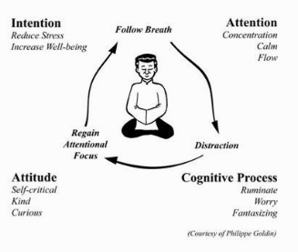

Search Inside Yourself
Chapter Two - Mindfulness Meditation
Process over product - The actual learning process of building a website is far more important than the result of the product you build!
Prior to reading Chapter 2 of 'Search Inside Yourself' I have been asked to share my current thoughts on meditation. At the moment, I try to spend at least 2-5 minutes per day meditating (which shouldn't be hard considering I am home nearly all the time). I am yet to really notice the difference between meditating and plain old relaxing, but I do struggle to empty my head of all thoughts and maybe once I crack that, I will begin to feel some form of true enlightenment.
By now reading chapter 2, I have learned that mindfulness meditation trains two important mental faculties: attention and meta-attention. We all understand the concept of training to increase our attention span, but meta-attention is training to increase our ability to pay attention to ourselves paying attention. Meta-attention is the part of the mind that notices when your attention has wandered. By improving both our attention and meta-attention we are able to better relax the mind, because ever time it begins to wander with thoughts of everyday life, we very quickly bring it back. When the mind is calm and relaxed, we are then able to enter the minds default state - HAPPINESS!
This chapter also deals with the issue I described in the opening paragraph, about not being able to empty all the thoughts out of my head. As you would expect, this is perfectly normal for a beginner and every single time you bring back your wandering mind, your ability to bring back the wandering mind gets a little bit stronger. As with everything in life, practice is the key to perfection.
The optimised sitting posture for mindfulness meditation needs to keep you both alert and relaxed at the same time. Here is one suggestion that has been developed over many years:
Back straight "like an arrow"
Legs crossed in "lotus position"
Shoulders relaxed, held up and back, "like a vulture"
Chin tucked in slightly, "like an iron hook"
Eyes closed or gazing into space
Tongue held against the upper palate
Lips slightly apart, teeth not clenched
Towards the end of this chapter the book explains some official scientific research that have been conducted on ordinary people practicing minfulness meditation. Proven benefits proved by this research include increased attention span, immunity development and brain functionality. The next step of practical training is to increase mindfulness meditation to at least 10 minutes per day, which sounds good to me.
Cheers,